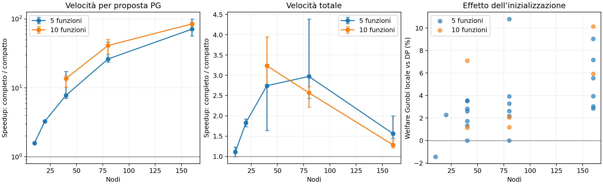

110 esecuzioni, 28 istanze, 54 confronti appaiati. Le 109 soluzioni completate sono ammissibili e intere. Tutti i prefissi delle 54 coppie verificate coincidono. 1 esecuzioni completate ma non appaiate e 1 esecuzioni interrotte sono escluse dalle statistiche appaiate. Nei 19 confronti senza arresto temporale coincidono anche tutte le allocazioni finali.
Il throughput PG confronta secondi per proposta: evita di confondere il tempo di una ricerca interrotta con quello di una ricerca completata. Il tempo totale include inizializzazione locale, aste, raffinamento e salvataggi. La variante compatta migliora il welfare in 26 coppie, lo conserva in 28 e lo riduce in 0.

| nodes | functions | pairs | pg_throughput_median | total_wall_median | welfare_gain_mean_pct | welfare_gain_max_pct | uncensored_pairs |
|---|---|---|---|---|---|---|---|
| 10 | 5 | 2 | 1.58 | 1.11 | 0.00 | 0.00 | 2 |
| 20 | 5 | 2 | 3.29 | 1.83 | 0.00 | 0.00 | 2 |
| 40 | 5 | 14 | 7.79 | 2.74 | 0.00 | 0.00 | 14 |
| 40 | 10 | 4 | 13.68 | 3.24 | 0.00 | 0.00 | 1 |
| 80 | 5 | 12 | 26.26 | 2.97 | 0.01 | 0.05 | 0 |
| 80 | 10 | 4 | 41.17 | 2.57 | 1.95 | 2.49 | 0 |
| 160 | 5 | 12 | 71.23 | 1.56 | 23.93 | 43.32 | 0 |
| 160 | 10 | 4 | 84.94 | 1.29 | 23.54 | 34.78 | 0 |
Con proposte compatte, migliora il welfare in 24 casi, lo conserva in 2 e lo riduce in 1. Guadagno medio 3.64%, intervallo -1.44% / 10.80%. Non è attivata automaticamente negli algoritmi.
Grafi connessi planari di grado 3, famiglia di espansione dei vertici del generatore esistente. Carichi condivisi materializzati e verificati con SHA-256; arrotondamento intero dei carichi scalati. Un timestep per istanza, ordine delle due proposte alternato fra istanze, un thread Gurobi. L'inizializzazione è congelata per isolare i pareggi fra ottimi locali; il suo tempo reale viene aggiunto al tempo totale, mentre i contatori incorporati nel replay sono azzerati. Le tracce aggiungono lo stesso osservatore a entrambe le proposte. La configurazione dei limiti è condivisa; il limite PG effettivo è ridotto dal tempo residuo delle aste e può differire leggermente. In 54 delle 54 coppie il compatto completa la PG entro il minore dei due limiti effettivi. L'eventuale guadagno di welfare della compattazione deriva da ulteriori mosse migliorative consentite dal tempo risparmiato, non da una diversa funzione obiettivo. Nessun messaggio o selezione globale viene aggiunto. I tempi sono misure su un solo computer e una ripetizione per variante/istanza; non sono una garanzia universale.
| case | nodes | functions | seed | load_scale | degree | initial_backend | pg_throughput_speedup | wall_speedup | welfare_gain_pct | pg_budget_full | pg_budget_compact | compact_within_lower_cap | uncensored |
|---|---|---|---|---|---|---|---|---|---|---|---|---|---|
| n10-f5-s4850-l1-k3 | 10 | 5 | 4850 | 1.000 | 3 | native | 1.571 | 1.231 | 0.000 | 2.500 | 2.500 | True | True |
| n10-f5-s4850-l1-k3 | 10 | 5 | 4850 | 1.000 | 3 | milp | 1.589 | 0.990 | 0.000 | 2.500 | 2.500 | True | True |
| n20-f5-s2026-l1-k3 | 20 | 5 | 2026 | 1.000 | 3 | native | 3.373 | 1.924 | 0.000 | 5.000 | 5.000 | True | True |
| n20-f5-s2026-l1-k3 | 20 | 5 | 2026 | 1.000 | 3 | milp | 3.200 | 1.735 | 0.000 | 5.000 | 5.000 | True | True |
| n40-f5-s7-l1-k3 | 40 | 5 | 7 | 1.000 | 3 | native | 7.797 | 2.782 | 0.000 | 10.000 | 10.000 | True | True |
| n40-f5-s7-l1-k3 | 40 | 5 | 7 | 1.000 | 3 | milp | 7.791 | 3.084 | 0.000 | 10.000 | 10.000 | True | True |
| n80-f5-s7-l1-k3 | 80 | 5 | 7 | 1.000 | 3 | native | 24.744 | 3.729 | 0.000 | 20.000 | 20.000 | True | False |
| n80-f5-s7-l1-k3 | 80 | 5 | 7 | 1.000 | 3 | milp | 23.545 | 2.438 | 0.015 | 20.000 | 20.000 | True | False |
| n160-f5-s7-l1-k3 | 160 | 5 | 7 | 1.000 | 3 | native | 70.553 | 1.446 | 26.220 | 29.196 | 29.263 | True | False |
| n160-f5-s7-l1-k3 | 160 | 5 | 7 | 1.000 | 3 | milp | 68.071 | 1.461 | 34.530 | 29.352 | 29.312 | True | False |
| n40-f5-s42-l1-k3 | 40 | 5 | 42 | 1.000 | 3 | native | 8.410 | 2.858 | 0.000 | 10.000 | 10.000 | True | True |
| n40-f5-s42-l1-k3 | 40 | 5 | 42 | 1.000 | 3 | milp | 7.932 | 2.649 | 0.000 | 10.000 | 10.000 | True | True |
| n80-f5-s42-l1-k3 | 80 | 5 | 42 | 1.000 | 3 | native | 25.953 | 2.696 | 0.015 | 20.000 | 20.000 | True | False |
| n80-f5-s42-l1-k3 | 80 | 5 | 42 | 1.000 | 3 | milp | 26.558 | 2.469 | 0.015 | 20.000 | 20.000 | True | False |
| n160-f5-s42-l1-k3 | 160 | 5 | 42 | 1.000 | 3 | native | 95.778 | 1.997 | 5.096 | 29.725 | 29.716 | True | False |
| n160-f5-s42-l1-k3 | 160 | 5 | 42 | 1.000 | 3 | milp | 100.070 | 1.994 | 7.989 | 29.750 | 29.749 | True | False |
| n40-f5-s99-l1-k3 | 40 | 5 | 99 | 1.000 | 3 | native | 7.123 | 2.984 | 0.000 | 10.000 | 10.000 | True | True |
| n40-f5-s99-l1-k3 | 40 | 5 | 99 | 1.000 | 3 | milp | 7.113 | 1.874 | 0.000 | 10.000 | 10.000 | True | True |
| n80-f5-s99-l1-k3 | 80 | 5 | 99 | 1.000 | 3 | native | 46.012 | 2.859 | 0.000 | 20.000 | 20.000 | True | False |
| n80-f5-s99-l1-k3 | 80 | 5 | 99 | 1.000 | 3 | milp | 46.002 | 3.409 | 0.046 | 20.000 | 20.000 | True | False |
| n160-f5-s99-l1-k3 | 160 | 5 | 99 | 1.000 | 3 | native | 71.280 | 1.801 | 26.164 | 29.691 | 29.690 | True | False |
| n160-f5-s99-l1-k3 | 160 | 5 | 99 | 1.000 | 3 | milp | 71.176 | 1.482 | 33.180 | 29.354 | 29.347 | True | False |
| n40-f5-s123-l1-k3 | 40 | 5 | 123 | 1.000 | 3 | native | 7.094 | 1.635 | 0.000 | 10.000 | 10.000 | True | True |
| n40-f5-s123-l1-k3 | 40 | 5 | 123 | 1.000 | 3 | milp | 7.193 | 2.143 | 0.000 | 10.000 | 10.000 | True | True |
| n80-f5-s123-l1-k3 | 80 | 5 | 123 | 1.000 | 3 | native | 25.801 | 2.641 | 0.006 | 20.000 | 20.000 | True | False |
| n80-f5-s123-l1-k3 | 80 | 5 | 123 | 1.000 | 3 | milp | 25.926 | 2.601 | 0.016 | 20.000 | 20.000 | True | False |
| n160-f5-s123-l1-k3 | 160 | 5 | 123 | 1.000 | 3 | native | 71.074 | 1.528 | 32.187 | 29.435 | 29.434 | True | False |
| n160-f5-s123-l1-k3 | 160 | 5 | 123 | 1.000 | 3 | milp | 71.739 | 1.547 | 43.325 | 29.383 | 29.372 | True | False |
| n40-f5-s2026-l1-k3 | 40 | 5 | 2026 | 1.000 | 3 | native | 16.747 | 3.271 | 0.000 | 10.000 | 10.000 | True | True |
| n40-f5-s2026-l1-k3 | 40 | 5 | 2026 | 1.000 | 3 | milp | 17.346 | 2.704 | 0.000 | 10.000 | 10.000 | True | True |
| n80-f5-s2026-l1-k3 | 80 | 5 | 2026 | 1.000 | 3 | native | 25.869 | 4.390 | 0.000 | 20.000 | 20.000 | True | False |
| n80-f5-s2026-l1-k3 | 80 | 5 | 2026 | 1.000 | 3 | milp | 26.632 | 4.194 | 0.000 | 20.000 | 20.000 | True | False |
| n160-f5-s2026-l1-k3 | 160 | 5 | 2026 | 1.000 | 3 | native | 66.820 | 1.671 | 8.913 | 29.761 | 29.748 | True | False |
| n160-f5-s2026-l1-k3 | 160 | 5 | 2026 | 1.000 | 3 | milp | 56.743 | 1.777 | 10.857 | 29.786 | 29.777 | True | False |
| n40-f5-s7-l0.75-k3 | 40 | 5 | 7 | 0.750 | 3 | native | 9.073 | 3.124 | 0.000 | 10.000 | 10.000 | True | True |
| n40-f5-s7-l0.75-k3 | 40 | 5 | 7 | 0.750 | 3 | milp | 9.403 | 3.051 | 0.000 | 10.000 | 10.000 | True | True |
| n40-f10-s7-l1-k3 | 40 | 10 | 7 | 1.000 | 3 | native | 14.471 | 3.949 | 0.000 | 10.000 | 10.000 | True | True |
| n40-f10-s7-l1-k3 | 40 | 10 | 7 | 1.000 | 3 | milp | 14.992 | 3.333 | 0.000 | 10.000 | 10.000 | True | False |
| n80-f10-s7-l1-k3 | 80 | 10 | 7 | 1.000 | 3 | native | 50.858 | 2.720 | 1.675 | 20.000 | 20.000 | True | False |
| n80-f10-s7-l1-k3 | 80 | 10 | 7 | 1.000 | 3 | milp | 50.612 | 2.527 | 2.492 | 20.000 | 20.000 | True | False |
| n160-f10-s7-l1-k3 | 160 | 10 | 7 | 1.000 | 3 | native | 81.891 | 1.210 | 17.605 | 29.295 | 29.278 | True | False |
| n160-f10-s7-l1-k3 | 160 | 10 | 7 | 1.000 | 3 | milp | 79.315 | 1.284 | 17.822 | 29.363 | 29.367 | True | False |
| n40-f10-s42-l1-k3 | 40 | 10 | 42 | 1.000 | 3 | native | 12.892 | 3.137 | 0.000 | 10.000 | 10.000 | True | False |
| n40-f10-s42-l1-k3 | 40 | 10 | 42 | 1.000 | 3 | milp | 10.303 | 2.759 | 0.000 | 10.000 | 10.000 | True | False |
| n80-f10-s42-l1-k3 | 80 | 10 | 42 | 1.000 | 3 | native | 30.715 | 2.212 | 1.667 | 20.000 | 20.000 | True | False |
| n80-f10-s42-l1-k3 | 80 | 10 | 42 | 1.000 | 3 | milp | 31.736 | 2.609 | 1.962 | 20.000 | 20.000 | True | False |
| n160-f10-s42-l1-k3 | 160 | 10 | 42 | 1.000 | 3 | native | 87.996 | 1.287 | 23.960 | 29.340 | 29.341 | True | False |
| n160-f10-s42-l1-k3 | 160 | 10 | 42 | 1.000 | 3 | milp | 89.550 | 1.411 | 34.779 | 29.613 | 29.610 | True | False |
| n80-f5-s7-l0.75-k3 | 80 | 5 | 7 | 0.750 | 3 | native | 29.079 | 4.259 | 0.000 | 20.000 | 20.000 | True | False |
| n80-f5-s7-l0.75-k3 | 80 | 5 | 7 | 0.750 | 3 | milp | 28.895 | 3.085 | 0.000 | 20.000 | 20.000 | True | False |
| n160-f5-s7-l0.75-k3 | 160 | 5 | 7 | 0.750 | 3 | native | 72.544 | 1.453 | 25.276 | 29.220 | 29.230 | True | False |
| n160-f5-s7-l0.75-k3 | 160 | 5 | 7 | 0.750 | 3 | milp | 74.976 | 1.575 | 33.476 | 29.354 | 29.359 | True | False |
| n40-f5-s7-l1.25-k3 | 40 | 5 | 7 | 1.250 | 3 | native | 7.262 | 2.166 | 0.000 | 10.000 | 10.000 | True | True |
| n40-f5-s7-l1.25-k3 | 40 | 5 | 7 | 1.250 | 3 | milp | 7.042 | 2.059 | 0.000 | 10.000 | 10.000 | True | True |
Branch: feat/uv-migration-and-extended-tests, HEAD 2cd3462.
Backend DP e proposta compatta integrati nel worktree; modifiche non ancora committate.
Il confronto usa la proposta precedente con lo stesso backend DP, non l'intero vecchio percorso MILP.
Le misure riflettono soprattutto la preparazione dei dati nel simulatore, che la proposta compatta limita ai dati del nodo e agli impegni in ingresso.
Gli input statici erano completi e non hanno richiesto fallback; una guardia per la diagnostica dei parametri mancanti è stata aggiunta dopo i benchmark.
Il codice usato per le misure e i suoi hash sono conservati in source_snapshot e provenance.json.
L'equivalenza delle proposte valide è stata riverificata dopo la guardia su 240 proposte.
.venv/bin/python benchmark_madea_pg_compact.py --seconds 3600 .venv/bin/python experiments/madea_pg_compact/temporal.py solutions/compact-temporal 780
I batch statici effettivi sono stati interrotti/riprioritizzati per rispettare il limite complessivo di 90 minuti:
18 casi completi nel primo batch, poi priorità alle dieci funzioni nel secondo batch (1500 s).
È esclusa un'esecuzione non appaiata del primo batch, ripetuta nel secondo; quest'ultimo contiene un'altra esecuzione non appaiata e un timeout alla scadenza.
Il generatore fixed_sum presenta un difetto già noto di arrotondamento del carico totale; i confronti condividono gli stessi carichi materializzati effettivi.
Quattordici esecuzioni completate, 42 timestep verificati, sette coppie di esecuzioni (21 confronti di timestep), su grafi planari da 40/80 nodi con 5/10 funzioni, seed 7. Un'esecuzione Gurobi è stata interrotta dal limite complessivo di 780 secondi; le istanze successive non sono state avviate. Inizializzazione realmente ricalcolata, contatori di runtime invariati e nessun osservatore per-mossa.
Tempo totale più rapido di 2.96× in mediana, contando ogni esecuzione una sola volta. Welfare migliore in 6 timestep, uguale in 15, peggiore in 0; guadagno massimo 12.14%. Tutte le soluzioni completate sono ammissibili e intere. Le allocazioni finali coincidono in tutti i 12 confronti senza arresto temporale. I sette confronti di esecuzione sono una verifica limitata, non una garanzia generale.
Ottanta modelli LSP indipendenti, dieci funzioni, istanza planare con seed 7. Il batch sequenziale richiede 0.131 secondi. Il pool usa multiprocessing con spawn su macOS, gli stessi input e la stessa funzione solve_single_agent del runner. Ogni soluzione x/r/omega/z coincide esattamente con il riferimento sequenziale. Due batch a pool caldo dopo il primo; nessuna modifica alle mosse PG o all'algoritmo distribuito.
| processes | first_batch_seconds | warm_batch_seconds | warm_speedup |
|---|---|---|---|
| 1 | 1.013 | 0.128 | 1.020 |
| 2 | 1.831 | 0.070 | 1.860 |
| 4 | 3.927 | 0.039 | 3.377 |
Il pool persistente accelera il lavoro locale, ma l'avvio domina sui batch brevi. La prova isola la risoluzione locale e il trasferimento dei risultati: non include aste, merge globale delle rappresentazioni del simulatore o aggiornamenti degli input fra round. Il trasferimento di nuovi input deve essere misurato prima di estendere il beneficio alla pipeline completa.
Suite completa: 887 test passati, un fallimento preesistente in test_integer_fixed_sum_traces_preserve_system_workload (il generatore fixed_sum perde il resto dell'arrotondamento: 9 richieste invece di 10). Generatore e test sono invariati rispetto a HEAD. Ruff, Mypy sui cinque file verificati e git diff --check passati. Nessun commit o push eseguito in questo ciclo.
GitNexus: impatto della compattazione LOW, due chiamanti di produzione; controllo aggregato delle modifiche CRITICAL per la diffusione del backend condiviso nelle famiglie di algoritmi. Le modifiche effettive dei file tracciati riguardano il routing verso il backend, la proposta compatta e la documentazione; il test MADEA-PG segnalato dal rilevatore è invariato nel diff.